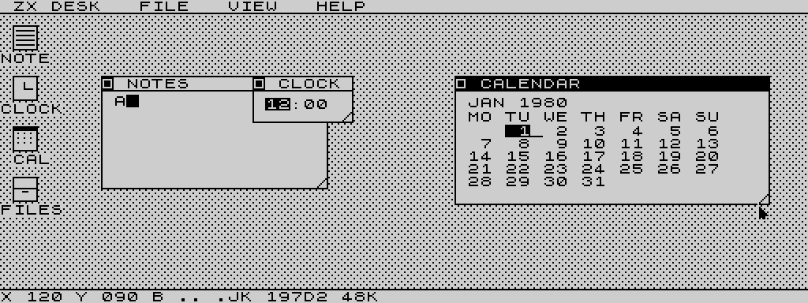

Normal screen
256×192 monochrome desktop. More memory remains available for window buffers.
Download normal TAP ↓48 KB · Z80 · Two video modes
A port of the original ZX Spectrum version by mindbox77.
Windows, menus, notes, a clock and a calendar—running natively on the Timex Sinclair 2068. A starting point for a mouse-driven environment in the spirit of GEOS on the Commodore 64.

Try it in your browser
Powered by Josef Jelinek’s TSRun.
Choose a mode to start the emulator.
Start with the normal desktop, or explore 64 columns in high resolution.
Loading a different version restarts the machine and discards RAM files.
Click inside the emulator, then use the arrow keys to move the pointer. No modifier keys are needed. Space is the pointer button; hold it while moving to drag a title bar. Space and all other typing keys pass through to the app unchanged.
Or press and hold these controls. For dragging, use Hold click with the arrows. The PC mouse does not directly drive this desktop yet.
The page automatically supplies the selected TAP to TSRun. Turbo loading is enabled; allow the tape to finish. Use TSRun’s Full control for fullscreen. The player’s arrow-key mapping also works in fullscreen. Use this page’s player link to keep that mapping when opening another tab.
Browser workaround: this page translates arrow keys into the app’s existing both-shifts + Q/A/O/P movement. You do not press Ctrl+Shift+Q, which some browsers use to quit. The TAP files and app controls are unchanged.
On a real TS2068, hold SHIFT + SYMBOL SHIFT and use the arrow-marked keys: 5 ←, 6 ↓, 7 ↑, 8 →. Q/A/O/P also work for up/down/left/right. Space retains its original pointer-button and text-entry behavior. Either built-in joystick can move the pointer; fire clicks.
In Fuse, use native TS2068 mode, load the TAP and enter LOAD "". Fuse also accepts Tab + Q/A/O/P for pointer movement; TSRun’s Tab mapping is different. Both built-in TS2068 joysticks are supported by the program.
Take it to your 2068
256×192 monochrome desktop. More memory remains available for window buffers.
Download normal TAP ↓512×192, 64 text columns and a full-width pointer. A separate build, with its own memory layout.
Download high-res TAP ↓Z80 assembly, Pasmo build scripts, test harness, both TAP files and development notes.
Download source archive ↓Where this could go
ZXDesk2068 ports mindbox77’s original ZX Spectrum ZXDesk to the native Timex machine: overlapping windows, menus, a notepad, clock, calendar, settings and a two-pane file manager. The 512×192 build makes practical use of the SCLD’s wider display without requiring a RAM expansion.
This could become the basis for a mouse-driven OS-like environment on the 2068, much as GEOS brought a graphical desktop to the C64. Today it is a desktop application and a foundation to build on, not a GEOS port or a general environment for running arbitrary programs.
The work was also the impetus for TSWriter, a GUI-driven proportional-font word processor for the 2068. Try TSWriter in the browser ↗
The plan is to integrate both ZXDesk2068 and TSWriter with TSPico filesystem 2.x when possible.
A Dock cartridge could simplify startup and hold read-only resources. TSPico RAM and storage, the Oliger disk system, and other backends remain options. Firmware compatibility and memory mapping must be established for each.
Optimize high-res drawing, improve window clipping and document limits, then add a common precise-pointer interface that both applications can use.
Hardware worth building
ZXDesk2068 and TSWriter make the case for a proper mouse on the 2068. Keyboard and joystick pointer control are useful starting points, but precise text editing, selection and window manipulation deserve better.
A Commodore 1351 in joystick-emulation mode is a possible starting point, subject to suitable wiring, power and compatibility checks. Its joystick mode reports directional controls rather than proportional movement; that is unlikely to meet today’s expectations for precision. Its proportional mode is a different interface and is not a drop-in match for the 2068. See the 1351 user’s guide.
A promising direction is a small Raspberry Pi Pico dongle, using TinyUSB together with Pico-PIO-USB for USB host support. A custom protocol could send several bits at a time through the TS2068 joystick interface, assembling those transfers into movement and input packets.
Instead of simply “left” or “right,” the packets could carry signed X/Y movement, button state, scrolling and keyboard events. That could support a USB mouse and keyboard, or a compatible wireless receiver for a mouse or touchpad-and-keyboard combination. Receiver and composite-device support would need testing; this is not a promise of universal wireless or Bluetooth compatibility.
Proposed, not built. The port protocol still needs framing, synchronization and polling rules; the dongle needs suitable electrical interfacing and USB power. Application drivers would decode its packets—keyboard data would not automatically replace the machine’s ROM keyboard scanning. No adapter schematic, firmware or mouse driver is included in this release.
Original ZX Spectrum ZXDesk by mindbox77, MIT licensed. TS2068 port and project direction: Jon / jon0x0. Browser emulation by Josef Jelinek.
The demos use an unmodified, pinned TSRun snapshot checked against upstream on 29 October 2026. Emulator provenance · ZXDesk license · Engineering roadmap